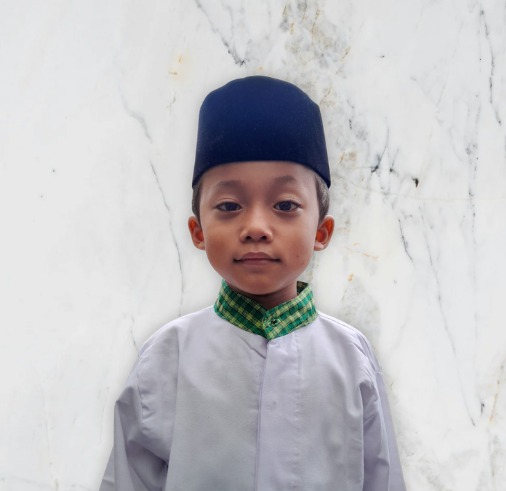

Gagal mengirim data. Silakan coba lagi.
";
}
}
?>
Assalamu'alaikum Wr Wb
Dengan Rahmat Allah yang Maha Kuasa Insya Allah kami akan melangsungkan Syukuran Khitanan
Yang Insya Allah akan dilaksanakan pada :
SABTU, 04 APRIL 2026

Malik Ainul Yaqin Sya'bani
Putra Dari :
Bpk. Anas Fuadi & Ibu Sulastari Suhandi
Bertempat Di :
Perum Graha Persada Mansion Blok A1 No. 8, Kp. Pulo Desa Sumberjaya, Kec. Tambun Selatan
Acara : Jam 08.00 - 11.00
Maulid & Pengajian Di Hadiri Oleh :
Habib Ja'far Sadiq Bin Al Amaqfurlah Al Walid
Habib Abdullah Bin Husein Bin Toha Al-Haddad
Merupakan kehormatan dan kebahagiaan bagi kami sekeluarga apabila Bapak/Ibu/Saudara/i berkenan Hadir, Sekaligus memberikan Do'a restu kepada Putra Kami.
Atas kehadiran dan Do'anya kami ucapkan Terimakasih.
Semoga Allah SWT senantiasa melimpahkan Rahmat Karunianya.